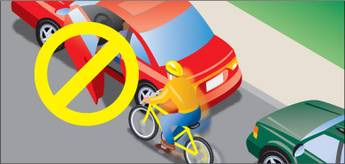
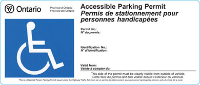
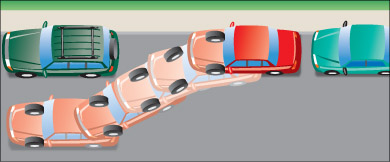
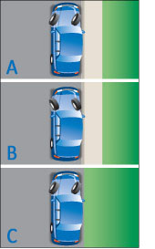

Since parking rules change from road to road and place to place, always watch for and obey signs that say you may not stop or limit stopping, standing or parking. Be aware that not all parking by-laws are posted on signs.
Here are some basic parking rules:
- Never park on the travelled part of a road. Drive off the road onto the shoulder if you must stop for some reason.
- Never park on a curve, hill or anywhere you do not have a clear view for at least 125 metres in both directions.
- Do not park where you will block a vehicle already parked or where you will block a sidewalk, crosswalk, pedestrian crossing or road entrance.
- Do not park within three metres of a fire hydrant, on or within 100 metres of a bridge or within six metres of a public entrance to a hotel, theatre or public hall when it is open to the public.
- Do not park within nine metres of an intersection or within 15 metres if it is controlled by traffic lights.
- Do not park within 15 metres of the nearest rail of a level railway crossing.
- Do not park where you will get in the way of traffic or snow clearing.
- Never open the door of your parked vehicle without first making sure that you will not endanger any other person or vehicle or interfere with traffic. Generally, a good practice is to use the Dutch reach method, meaning you open the driver’s door with your right hand as this will force a shoulder check at the same time.. Take extra precautions to avoid opening a door in the path of cyclists, who often ride close to parked cars (Diagram 2-50). When you must open a door next to traffic, keep it open only long enough to load or unload passengers.

Diagram 2-50
After parking your vehicle, always turn off the ignition and the lights, remove the key and lock the door to deter theft. Do not leave children or animals in the vehicle.
Before moving from a parked position, always signal and check for traffic, pulling out only when it is safe to do so.
Parking for people with disabilities

Diagram 2-51
The Accessible Parking Permit, formerly known as the Disabled Person Parking Permit, is a laminated card that may be displayed on the dashboard or turned-down sun visor of any vehicle in which a person with a disability is travelling. The permit entitles the vehicle in which the person named on the permit is travelling to park in designated disabled parking, standing and stopping areas. The permit is issued to the permit holder, not a specific vehicle.
People who have the old version of the permit, the Disabled Person Parking Permit, may continue to use this permit until it expires. Upon its expiry, any new permit issued will be the Accessible Parking Permit.
The Accessible Parking Permit is issued free of charge to qualified individuals. To qualify for an Accessible Parking Permit, a licensed physician, chiropractor, nurse practitioner (extended class) physiotherapist or occupational therapist must certify that the applicant has one or more of the conditions detailed on the Accessible Parking Permit application form.
There are four types of Accessible Parking Permits.
- A regular permit (blue) is issued to people with permanent disabilities and is valid for five years. Until 2011, all individuals will need to be re-certified before renewing their permit. After that date, only individuals whose condition is deemed “subject to change” will need to be re-certified before renewing their permit.
- A temporary permit (red) is issued when the disability is expected to last more than two months, but is not a permanent disability. The temporary permit is not renewable.
- A traveller permit (purple) is valid for up to one year and is issued upon request to individuals who hold a valid Accessible Parking Permit and plan to fly from any Ontario airport. The permit holder places the traveller permit on the dashboard or sun visor of their vehicle when leaving it parked at the airport. The person’s regular permit travels with them.
- A company permit (green) is valid for up to five years and is issued to companies and non-profit organizations that own or lease vehicles used to transport people with physical disabilities.
Misuse or abuse of an Accessible Parking Permit should be reported to the police. Misuse of an Accessible Parking Permit will result in fines and revoked privileges. Accessible Parking Permit applications are available at any Service Ontario Centre or by sending a request to the ministry at the following address:
Service Ontario
Licence Renewals Unit
P.O. Box 9800
Kingston, ON K7L 5N8
Never park in a space designated for people with disabilities unless you display an Accessible Parking Permit in the windshield of your vehicle. The permit must belong to you or one of your passengers. This also applies to standing or stopping at curb areas reserved for picking up and dropping off passengers with disabilities.
Parallel parking
Parallel parking means parking a vehicle with its wheels parallel and next to the curb or side of the road. Park parallel to the curb on roads where parking is allowed, unless there are signs saying that vehicles should be parked at an angle. Park on the right side of the road in the direction of traffic. Unless there are signs saying otherwise, you can parallel park on both sides of a one-way road.

Diagram 2-52
To parallel park on the right-hand side of the road, find a space that is about one and one-half times longer than your vehicle. Check the traffic beside and behind and signal your wish to pull over and stop. Drive alongside, or parallel to, the vehicle ahead of the empty space, leaving about a metre between the vehicles. Stop when your rear bumper is in line with the other vehicle. Follow these steps:
- Slowly and carefully reverse into the space, turning the steering wheel fully toward the curb.
- When you can see the outside rear corner of the vehicle in front of your space, straighten your wheels as you continue to reverse.
- Turn the steering wheel fully toward the road to bring your vehicle in line with the curb.
- If your vehicle is not parallel to the curb, drive forward to straighten.
- When you are properly parked, set the parking brake and move the gear selector into park, or shift into first or reverse gear if your vehicle has a manual transmission.
- Turn off the engine. Remember to remove the key from the ignition. Check traffic before opening your door. Lock your vehicle.
Parking on a hill
When parking facing downhill, turn your front wheels towards the curb or right shoulder. This will keep the vehicle from rolling into traffic if the brakes become disengaged (Diagram 2-53 A).
Turn the steering wheel to the left so the wheels are turned towards the road if you are facing uphill with a curb. The tires will catch the curb if it rolls backward (Diagram 2-53 B).
When facing uphill without a curb, turn the wheels sharply to the right. If the vehicle rolls, it will go off the road rather than into traffic (Diagram 2-53 C).
When parking on a hill, always set the parking brake and move the gear selector into park, or shift into first or reverse gear if your vehicle has a manual transmission. Turn off the engine and remove the key. Check for traffic before opening the door and remember to lock your vehicle.

Diagram 2-53
Roadside stop
When you need to stop by the side of the road for a short time to check something outside your vehicle, or to look for directions on a map, for example, follow these directions:
- Before slowing down, check your mirrors and blind spot to see when the way is clear.
- Turn on your signal before slowing down unless there are vehicles waiting to enter the road from side roads or driveways between you and the point where you intend to stop. Wait until you have passed these entrances so that drivers will not think you are turning before the stopping point.
- Steer to the side of the road, steadily reducing speed, and stop parallel to the curb or edge of the road. You should not be more than about 30 centimetres away from it. Do not stop where you will block an entrance or other traffic.
- Turn off your signal and turn on your hazard lights.
If your vehicle has an automatic transmission, put the gear selector in park and set the parking brake. If your vehicle has a manual transmission, set the parking brake and shift into neutral if not turning off the engine, or shift into low or reverse if turning off the engine. When parking on a hill, set your wheels against the curb, in the appropriate direction to keep your vehicle from rolling.
Pulling out from a roadside stop
When pulling out from a roadside stop, do the following:
- Release the parking brake and move the gear selector to drive or shift into first gear.
- Turn off your flashers and turn on your left-turn signal.
- Just before pulling away from the stop, check your mirrors and blind spot to make sure the way is clear of vehicles and cyclists.
- Return to normal traffic speed by accelerating smoothly to blend with the traffic around you. In light traffic, accelerate moderately. In heavier traffic, you may have to accelerate more quickly. In a vehicle with manual transmission, shift gears as you increase speed.
- Turn off your left-turn signal as soon as you are back on the road.
Summary
By the end of this section, you should know:
- Basic parking rules that may not appear on posted street signs
- What an Accessible Parking Permit is, and who is eligible to park in spaces designated for people with disabilities
- What parallel parking is and what steps to follow to complete it successfully
- How to safely pull over your vehicle for a roadside stop and re-enter traffic